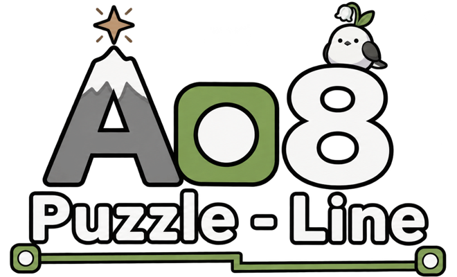
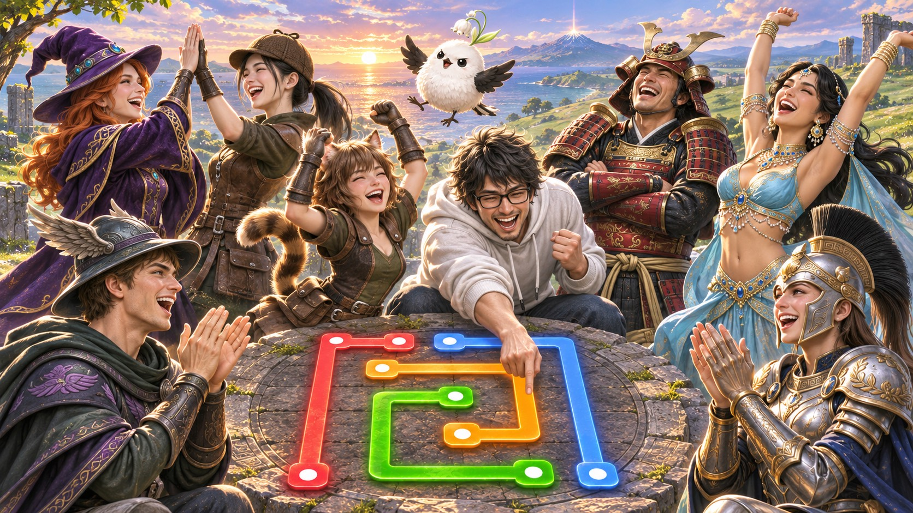
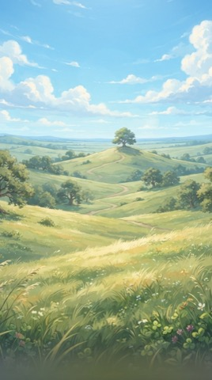
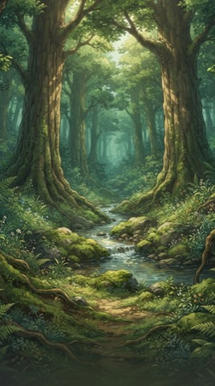
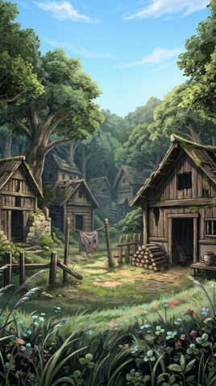
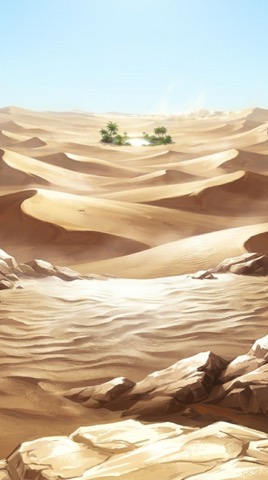
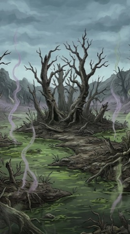
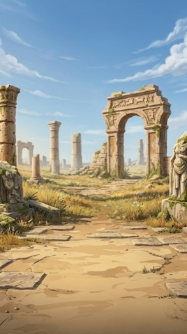
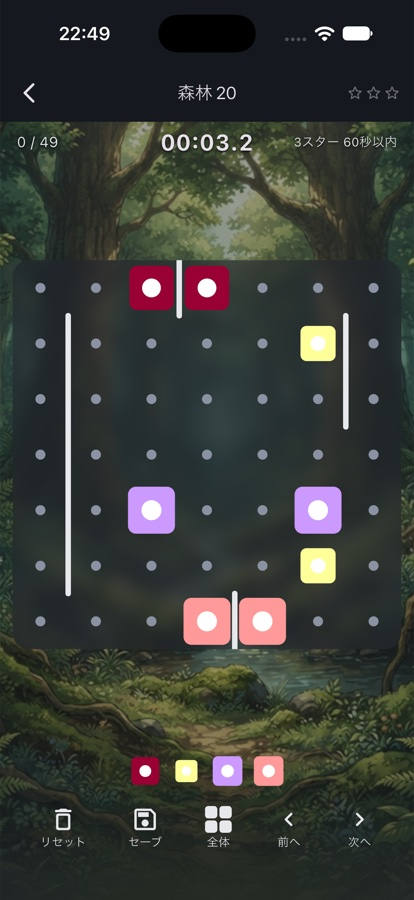
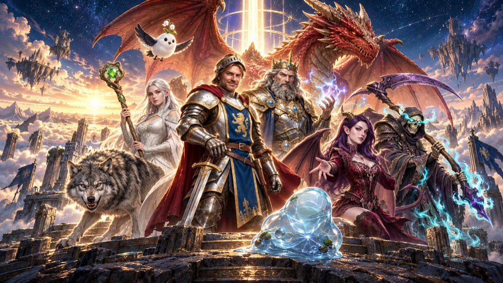

線でつなぐだけ、ひらめきパズル

指でなぞって、同じ色の端点をつなぐ。すべてのマスを埋めたら完成。ルールはシンプル、奥は深い、ひと筆ごとに頭がほどけるパズルです。
遊び方
同じ色の端点が2つずつ
特徴
小さな盤面から始まり、最後は20×20の大きな盤面へ。わかるところから線を引いていけば、少しずつ答えが見えてきます。
大きさの違う3問が毎日届きます。すき間の時間に、頭の体操を。
100秒で何問解けるかの「100秒チャレンジ」と、先に頭の中で解いてから一気に引く「ひらめきチャレンジ」。
『Apex of 8』の島をめぐる
舞台は『Apex of 8』の洗礼の旅の島。草原・森林・海岸・廃村・砂漠・沼地・遺跡、そして山岳。パズルを解いて「パズルIQ」を上げるほど、新しいマップが開いていきます。
マップを星3つでそろえたり、ひらめきチャレンジで続けて解いたりすると、Ao8 のボスたちが仲間に。仲間はホームに遊びに来ます。






気持ちよく引ける
線は途中からでも引き直せます。2回タップで一本道を自動で伸ばしたり、払って一気に進めたり。

Apex of 8 と連携
目指せ、パズルIQ 120
パズルIQを、同じiPhoneに入れた育成シミュレーションRPG『Apex of 8』に連携できます。パズルIQが上がるほど、Ao8 のミッションで報酬を受け取れます。もちろん、このアプリだけでも最後まで楽しめます。
※ 連携は、今後の『Apex of 8』のアップデートで使えるようになります。対応の時期は、このサイトでお知らせします。

8種族×8クラスの戦士候補を育て上げ、頂点を目指す育成シミュレーションRPG。
最初の一本を、引いてみよう。
基本無料（広告あり）。広告を消す買い切りの購入もあります。